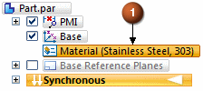
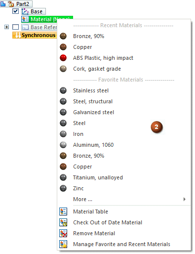

Material PathFinder node
PathFinder contains a material node (1). This node displays the material applied to the model.

Right-clicking the material node displays a shortcut menu (2).

The shortcut menu contains the following:
-
Material Table
This option opens the Material Table dialog box and you can select a material that is not in the shortcut menu lists.
-
Check Out of Date Material
This option checks for out of date mateiral and gage properties in the material table.
-
Remove Material
This option removes the applied material and changes the material node display to (None).
-
Manage Favorite and Recent Materials
This option opens the Material Table and displays the Favorites and Recent Materials tab.
How do I
Apply a material to a partAdd a favorite material
Create a new material
Create a custom material property
Change the location of the material folder
Change the Material Table units
Learn more
Material TableManaging material libraries
Copying and pasting materials
Importing and exporting materials
Look up more details
Material Table commandMaterial library property file
Sheet metal gages file
Material Table dialog box
Material Properties tab
Gage Properties tab
Favorites and Recent Materials tab